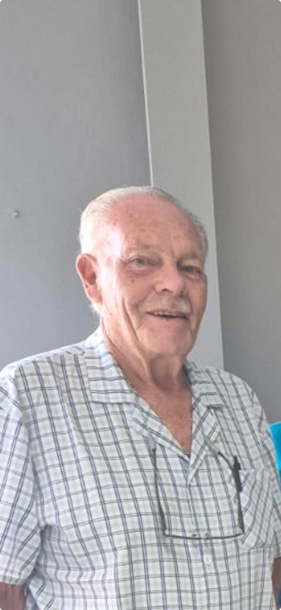
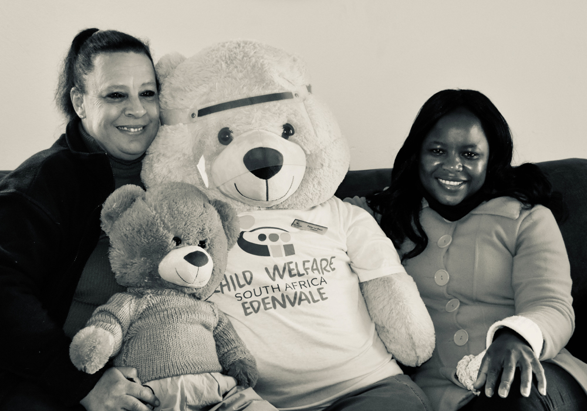
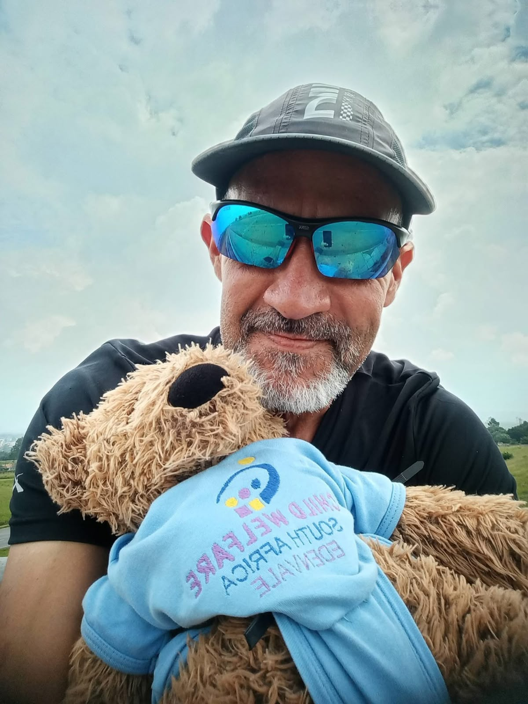
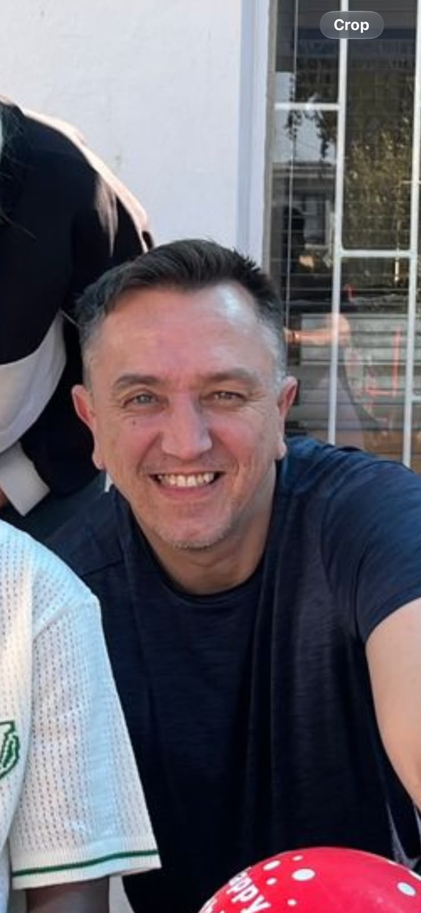
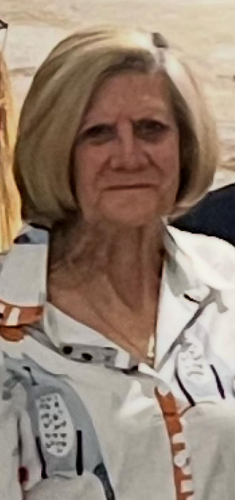

Robert Hooper
Chairman
A local organisation with a wide circle of care
Child Welfare SA Edenvale is affiliated to Child Welfare South Africa and is an important part of the Edenvale community.

Our focus
Our main focus is Child Protection Services and assisting families with children who are in need of social services.
We work with families, schools, funders, partner organisations and the wider community to help people access practical support.
Our people
The people guiding and delivering Child Welfare SA Edenvale's work in the community.

Chairman

Vice Chairperson

Treasurer
Ordinary Committee Member

Ordinary Committee Member
Ordinary Committee Member
Ordinary Committee Member
Ordinary Committee Member
Office Admin and Centre Manager
Senior Social worker
Social Worker
Social Worker
Social Worker
Auxiliary Social Worker
Grade R Teacher and Educare Principal
Grade RR Teacher
Grade RRR Teacher
ECD Assistant
What guides us
People need a safe place to ask for support and share what is happening.
Strong networks help families receive the right support at the right time.
We focus on useful next steps that make everyday life safer and more supported.
Our work
See our service areas, community projects and ways to support the work.